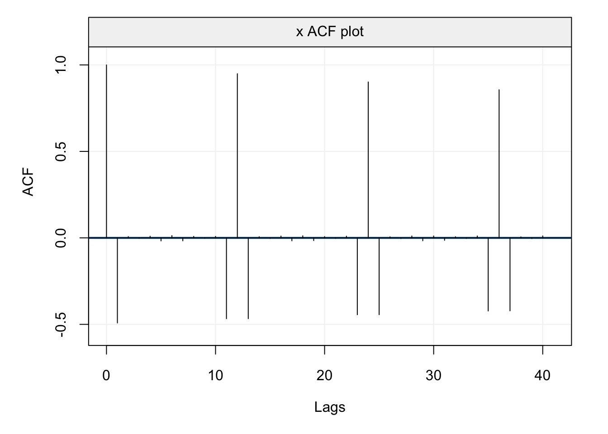

Chapter 2 SARIMA Models
As seen in the previous section, ARMA models can be adapted in order to tackle different forms of non-stationary time series through the use of differencing, thereby delivering the class of ARIMA models. However, aside from non-stationarity, within different applied examples seen this far you may have noticed that many ACF (and PACF) plots denoted some forms of seasonality. Indeed, despite removing possible deterministic seasonal effects via regression techniques, it is often the case that some stochastic seasonal components appear in the (residual) time series. For this reason, the class of AR(I)MA models can be extended in order to take this seasonality into account thereby delivering the class of SARIMA models.
To introduce the more general class of SARIMA models, let us first consider the standard AR(1) model
\[X_t = \phi X_{t-1} + W_t,\] which explains the behaviour in time via the previous observation. Based on this model, for all time points the dependence on the past is explained by the previous observation at time \(t-1\). However, in the case of seasonal effects, this dependence on the past may be explained (also) by other lags \(t-s\), where \(s > 1\). For example, the following model
\[X_t = \phi X_{t-12} + W_t,\] is a first-order seasonal AR model with \(s = 12\) which is equivalent to an AR(12) model with \(\phi_i = 0\) for \(i = 1,...,11,\) and \(\phi_{12} \neq 0\). However, using an AR(12) model would be theoretically incorrect for this case (since there is no direct dependence on intermediate observations) and would be statistically inefficient to estimate and, consequently, the definition of a seasonal component is more appropriate. In fact, the definition of \(s = 12\) for the above example is typically the case of time series for economic or ecological phenomena where there can be a dependence between the same months.
Having justified the need for the extension to SARIMA models, let us more formally define this class of models starting from the example provided above.
Definition 2.1 (Seasonal Autoregressive Model of Order 1) A sesaonal autoregressive model of order 1 is defined as follows:
\[X_t = \Phi X_{t-s} + W_{t} \Leftrightarrow (1 - \Phi B^{s}) X_t = W_t\]
The model would have the following properties:
- \[\mathbb{E}[{X_t}] = 0\]
- \[\gamma(0) = \text{Var}\left[X_t\right] = \frac{\sigma^2}{1-\Phi^2}\]
- \[\rho(h) = \begin{cases} 1 &\text{ if } h = 0\\ \Phi^{\left|h\right|} &\text{ if } h = \pm \, s \cdot k, \, k = 1, 2, \cdots\\ 0 &\text{ otherwise. } \end{cases}\]
One aspect to underline at this point is the different notation used to explain seasonal dependence. Indeed, for standard AR(\(p\)) models the notation for autoregressive parameters in this book is \(\phi_i\) while for the seasonal dependence we have \(\Phi_i\). This is because a model can contain both standard AR(\(p\)) components (i.e. direct dependence on observations between \(t\) and \(t-p\)) as well as seasonal components where direct dependence can occur with observations at lags \(s > p\) (with no direct dependence on observations between \(t-p\) and \(t-s\)).
Keeping in mind the need for this additional notation, we can now define the first-order seasonal moving average process.
Definition 2.2 (Seasonal Moving Average of Order 1) A seasonal moving average model of order 1 is defined as follows:
\[X_t = W_t + \Theta W_{t-s} \Leftrightarrow X_t = (1 - \Theta B^{s}) W_t\]
\[\gamma(h) = \begin{cases} \left({1+\Theta^2}\right)\sigma^2 &\text{ if } h = 0 \\ \Theta \sigma^2 &\text{ if } h = \pm \, s \cdot k, \, k = 1, 2, \cdots \\ 0 &\text{ otherwise .} \\ \end{cases}\]
Therefore, a seasonal moving average is also defined in the same manner as a standard moving average model where the direct dependence is not strictly on the immediately adjacent past observations. Following the same logic, we can therefore define the seasonal equivalent of the autoregressive and moving average operators.
Definition 2.3 (Seasonal Autoregressive Operator) Similarly, to the regular autoregressive operator, the seasonal autoregressive operator is defined as:
\[\Phi_P(B^S) = 1 - \Phi_1 B^S - \Phi_2B^{2S} - \cdots - \Phi_PB^{PS}\]Definition 2.4 (Seasonal Moving Average Operator) The seasonal moving average operator is defined as:
\[\Theta_Q(B^S) = 1 + \Theta_1 B^S + \Theta_2B^{2S} + \cdots + \Theta_QB^{QS}\]In these cases, \(P\) and \(Q\) play the same role as the \(p\) and \(q\) orders for ARMA(\(p\),\(q\)) models thereby determining how far into the past the direct seasonal dependence is present. Given this notation, we can define a pure seasonal ARMA model.
Definition 2.5 (Seasonal ARMA Model) A seasonal ARMA model is defined as:
\[\Phi_P(B^S) X_t = \Theta_Q(B^S) W_t\]The above model therefore considers all direct seasonal dependencies without any components of standard ARMA models which can nevertheless be included to deliver a general SARMA model. Below is an example of such a model.
Example 2.1 (Mixed Seasonal Model) Consider the following time series model that contains both a seasonality term and a traditional time series component:
\[X_t = \Phi X_{t-12} + \theta W_{t-1} + W_t, \,\,\, \left| \Phi \right| < 1, \,\, \left| \theta \right| < 1\]
The properties of this model can be derived as follows:
\[\begin{align} \text{var} \left( {{X_t}} \right) &= {\Phi ^2}\text{var} \left( {{X_{t - 12}}} \right) + {\sigma ^2} + {\theta ^2}{\sigma ^2} \notag \\ \Rightarrow \gamma \left( 0 \right) &= \frac{{{\sigma ^2}\left( {1 + {\theta ^2}} \right)}}{{1 - {\Phi ^2}}} \\ \gamma \left( 1 \right) &= \text{cov}\left( {{X_t},{X_{t - 1}}} \right) = \text{cov}\left( {\Phi {X_{t - 12}} + {W_t} + \theta {W_{t - 1}},{X_{t - 1}}} \right) \notag \\ &= \Phi \text{cov}\left( {{X_{t - 12}},{X_{t - 1}}} \right) + \underbrace {\text{cov}\left( {{W_t},{X_{t - 1}}} \right)}_{ = 0} + \theta \text{cov}\left( {{W_{t - 1}},{X_{t - 1}}} \right) \notag \\ &= \Phi \gamma \left( {11} \right) + \theta {\sigma ^2} \\ \gamma \left( h \right) &= \text{cov}\left( {{X_t},{X_{t - h}}} \right) = \text{cov}\left( {\Phi {X_{t - 12}} + {W_t} + \theta {W_{t - 1}},{X_{t - h}}} \right) \notag \\ &\overbrace{=^{h \ge 2}}\Phi \text{cov}\left( {{X_{t - 12}},{X_{t - h}}} \right) \notag \\ &= \Phi \gamma \left( {h - 12} \right) \\ \end{align}\] If the autocovariance is defined within the appropriate seasonal lag, then we have a realized value other than zero \[\begin{equation} \gamma \left( 1 \right) = \Phi \gamma \left( {11} \right) + \theta {\sigma ^2} = {\Phi ^2}\gamma \left( 1 \right) + \theta {\sigma ^2} = \frac{{\theta {\sigma ^2}}}{{1 - {\Phi ^2}}} \end{equation}\] When this is not the case, the autocovariance will be zero: \[\begin{align} \gamma \left( 2 \right) &= \text{cov} \left( {{X_t},{X_{t - 2}}} \right) = \operatorname{cov} \left( {\Phi {X_{t - 12}} + {W_t} + \theta {W_{t - 1}},{X_{t - 2}}} \right) \notag \\ &= \Phi \text{cov} \left( {{X_{t - 12}},{X_{t - 2}}} \right) = \Phi \gamma \left( {10} \right) = {\Phi ^2}\gamma \left( 2 \right) = 0 \end{align}\]In this example, this would hold for:
\[\begin{equation} \gamma \left( 3 \right) = \gamma \left( 4 \right) = \cdots = \gamma \left( 10 \right) = 0 \end{equation}\] Therefore, the autocovariance can be denoted as: \[\begin{align*} \gamma \left( {12h} \right) &= {\Phi ^h}\gamma \left( 0 \right), &h = 0, 1, 2, \ldots \\ \gamma \left( {12h + 1} \right) &= \gamma \left( {12h - 1} \right) = {\Phi ^h}\gamma \left( 1 \right), &h = 0, 1, 2, \ldots \\ \gamma \left( {h} \right) &= 0, &\text{Otherwise} \end{align*}\]As a result, the autocorrelation is given as:
\[\begin{align*} \rho \left( {12h} \right) &= {\Phi ^h}, & h = 0, 1, 2, \ldots \\ \rho \left( {12h - 1} \right) &= \rho \left( {12h + 1} \right) = \frac{\theta }{{1 + {\theta ^2}}}{\Phi ^h}, & h = 0, 1, 2, \ldots \\ \rho \left( h \right) &= 0, & \text{Otherwise} \\ \end{align*}\]The correlation structure can be viewed quite straightforwardly.
library(simts)
model = SARIMA(ar=0, i=0,ma=-0.8, sar=0.95, si = 0 , sma = 0, s = 12)
xt = gen_gts(100000, model)
plot(auto_corr(xt, lag.max = 40))
Definition 2.6 (Seasonal ARMA Model Form) The form of Seasonal Autoregressive Moving Average models is often written as \(ARMA(p, q)\times(P, Q)_{S}\):
\[\Phi_p \left({B^S}\right) \phi\left(B\right) X_t = \Theta_Q \left({ B^S }\right) \theta \left({ B }\right) W_t\]Example 2.2 (Classifying a Seasonal ARMA) Returning to our previous example, we can see that the time series follows an \(ARMA(0,1)\times(1,0)_{12}\) process.
\[\begin{align*} {X_t} &= \Phi {X_{t - 12}} + {W_t} + \theta {W_{t - 1}} \hfill \\ \underbrace {\left( {{X_t} - \Phi {B^{12}}} \right)}_{{\Phi _1}\left( {{B^{12}}} \right)}\underbrace 1_{\phi \left( B \right)}{X_t} &= \underbrace 1_{{\theta _Q}\left( B \right)}\underbrace {\left( {1 - \theta B} \right)}_{\theta \left( B \right)}{W_t} \hfill \\ \end{align*}\]Definition 2.7 (Seasonal ARIMA Model Form) The form of a Seasonal Autoregressive Integrated Moving Average models is denoted as \(ARIMA(p, d, q)\times(P, D, Q)_S\):
\[\Phi_p \left({B^S}\right) \phi\left(B\right) \nabla^D_S \nabla^d X_t = \delta + \Theta_Q \left({ B^S }\right) \theta \left({ B }\right) W_t\]
where \(\nabla^d = \left({1-B}\right)^d\) and \(\nabla^D_S = \left({1-B^S}\right)^D\).In practice, identifying the parametrization of a SARIMA model is problematic. There is no easy way to find \(p, d, q, P, D, Q, S\).
Xt = gts(as.numeric(dmseries("https://datamarket.com/data/set/22pw/monthly-lake-erie-levels-1921-1970#!ds=22pw&display=line")),
start = 1921, freq = 12, name_ts = "Water Levels",
data_name = "Monthly Lake Erie Levels", name_time = "")
plot(Xt)Figure 2.1: TO DO
corr_analysis(Xt)
Figure 2.2: Empirical ACF (left) and PACF (right) of the Lake Erie time series data.
Xt = gts(as.numeric(dmseries("https://datamarket.com/data/set/235j/number-of-daily-births-in-quebec-jan-01-1977-to-dec-31-1990#!ds=235j&display=line")),
start = 1977, freq = 365, name_ts = "Number of Births",
data_name = "Number of Births in Quebec", name_time = "")
plot(Xt)
Figure 2.3: TO DO
corr_analysis(Xt, lag.max = 50)
Figure 2.4: Empirical ACF (left) and PACF (right) of the Births time series data.
mod = estimate(SARIMA(ar = 2, ma = 1, sar = 2, sma = 1, s = 7, si = 1), Xt, method = "mle")
check(mod)
predict(mod, n.ahead = 30)